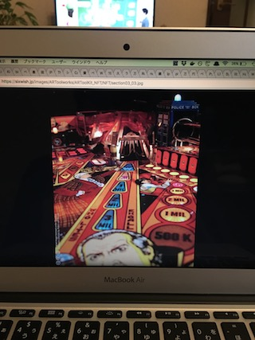

<html>
<body>

<!-- <script src="js/third_party/three.js/three.min.js"></script> -->
<!-- <script src="../build/artoolkit.debug.js"></script> -->
<script src="../build/artoolkit.min.js"></script>
<script src="../js/artoolkit.api.js"></script>
<p id="count"></p>
<input type="file" id="videoFile" />
<video id="video" src="Data/IMG_3146.mov" width="640" height="360" controls="" autoplay></video>
<!-- </img> -->

<script>
var video = document.querySelector('#video');
var count = document.querySelector('#count');
var result = {};
//var ar = new ARController(video.videoWidth, video.videoHeight, 'Data/camera_para.dat');
console.log(video.width)
var ar = new ARController(video.width, video.height, 'Data/camera_para.dat');
ar.onload = function() {
        var number = 0;
        count.textContent = number;

          ar.loadNFTMarker('Pattern/3', function(marker) {
            result[marker] = 0;
            console.log('loaded');
            console.log('markerID', marker);
          });

          ar.loadNFTMarker('Pattern/4', function(marker) {
            result[marker] = 0;
            console.log('loaded');
            console.log('markerID', marker);
          });
//		ar.loadMarker('Data/patt.kanji', function(markerId) {
//                  console.log('loaded');
//                });
//
//		ar.loadMarker('Data/patt.hiro', function(markerId) {
//                  console.log('loaedd');
//                });
//

	ar.addEventListener('getNFTMarker', function(ev) {
          result[ev.data.marker.id]++;
          console.log('[saw]', ev.data.marker.id, 'result: ', result);
	});

	//console.log('camera matrix', ar.getCameraMatrix());

	setInterval(function() {
		ar.process(video);
	}, 33);
};


</script>

</body>
</html>
